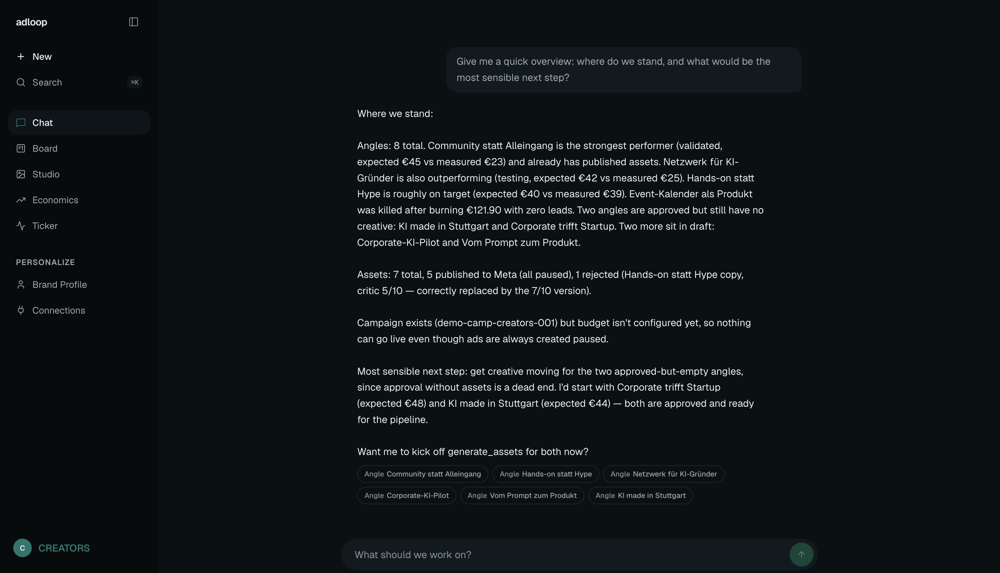

adloop.
You build the product.
adloop builds the audience.
The open-source growth engine for paid ads.
01 · The problem
01
All your time goes into building. Distribution gets the leftovers.
Founders ship great products that nobody sees.
02
Paid ads run on gut feeling.
Unstructured tests. Learnings evaporate. Budgets burn without compounding.
03
Agencies close that gap — at prices small teams can't pay.
So for most small teams, it stays open.
02 · How it works
One loop, end to end.
03 · The flywheel
Every loop makes the next ad better.
Cost per result falls, loop after loop — while you keep building.
Let's walk through it.
Demo · Ask. The strategist knows the whole account.

Demo · Every ad starts as a falsifiable hypothesis.
![[ screenshots/board.png ]](screenshots/board.png)
Demo · Visual + copy, scored before a euro is spent.
![[ screenshots/studio.png ]](screenshots/studio.png)
Demo · Results feed the next loop. Cost per result falls.
![[ screenshots/economics.png ]](screenshots/economics.png)
You build the product.
adloop builds the audience.
adloop-app.onrender.com
Open source (MIT) · github.com/LinusAurel/adloop
Published a real campaign to a live Meta account — today.
1 / 9
↑↓ / ←→ navigate